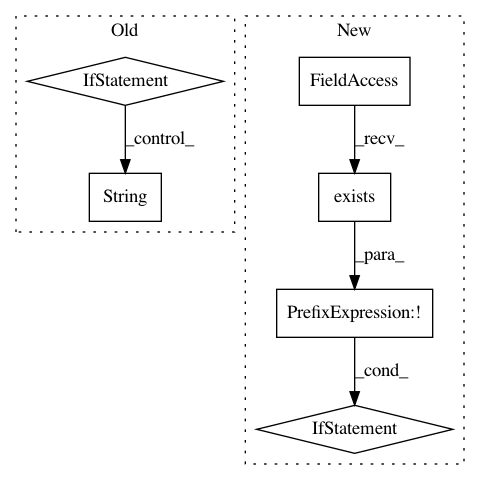

289c479060004bd9fd638dab7027f407ba75e798,pycorrector/detector.py,Detector,initialize_detector,#Detector#,51
Before Change
def initialize_detector(self):
t1 = time.time()
if self.enable_rnnlm:
self.lm = LM(self.rnnlm_model_dir, self.rnnlm_vocab_path)
logger.debug("Loaded language model: %s, spend: %s s" % (self.rnnlm_model_dir, str(time.time() - t1)))
else:
try:
import kenlm
except ImportError:
raise ImportError("pycorrector dependencies are not fully installed, "
"they are required for statistical language model."
"Please use "pip install kenlm" to install it."
"if you are Win, Please install kenlm in cgwin.")
self.lm = kenlm.Model(self.language_model_path)
logger.debug("Loaded language model: %s, spend: %s s" % (self.language_model_path, str(time.time() - t1)))
// 词、频数dict
t2 = time.time()
self.word_freq = self.load_word_freq_dict(self.word_freq_path)
t3 = time.time()
logger.debug("Loaded word freq file: %s, size: %d, spend: %s s" %
After Change
"they are required for statistical language model."
"Please use "pip install kenlm" to install it."
"if you are Win, Please install kenlm in cgwin.")
if not os.path.exists(self.language_model_path):
get_file(
config.language_model_name, config.language_model_url, extract=True,
cache_dir=config.USER_DIR,
cache_subdir=config.USER_DATA_DIR,
verbose=1
)
self.lm = kenlm.Model(self.language_model_path)
logger.debug("Loaded language model: %s, spend: %s s" % (self.language_model_path, str(time.time() - t1)))
// 词、频数dict
In pattern: SUPERPATTERN
Frequency: 3
Non-data size: 6
Instances
Project Name: shibing624/pycorrector
Commit Name: 289c479060004bd9fd638dab7027f407ba75e798
Time: 2019-11-24
Author: xuming624@qq.com
File Name: pycorrector/detector.py
Class Name: Detector
Method Name: initialize_detector
Project Name: instacart/lore
Commit Name: 7533d3b3abeaedd42a2ee4869a77e48ba2e2016a
Time: 2018-02-23
Author: montanalow@users.noreply.github.com
File Name: lore/env.py
Class Name:
Method Name: set_python_version
Project Name: merenlab/anvio
Commit Name: 5c64683f0eb771826fab33cfee0943a76bfd4972
Time: 2019-10-09
Author: kiefl.evan@gmail.com
File Name: anvio/drivers/sourmash.py
Class Name: Sourmash
Method Name: process